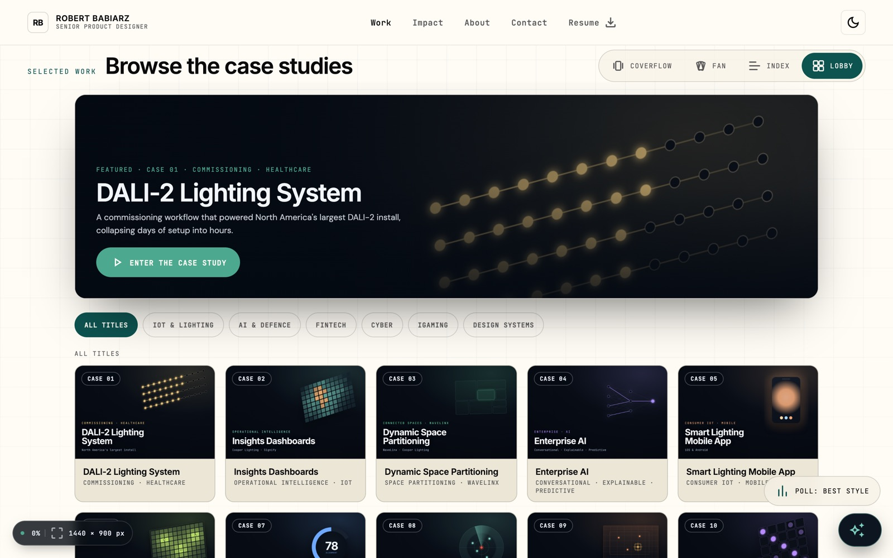

Ten case studies argue that working software beats slideware. This eleventh one turns the argument on the site itself: the token architecture it renders from, the zero-build stack it ships on, the AI-paired process that built it, and the verification culture that gates every change. Two of its exhibits run live on this page.

This portfolio is a single product: 29 self-contained pages sharing one token discipline, one accessibility bar, one editorial voice, and one build record. There is no handoff anywhere in it — the research framing, the interaction design, the visual system, and the shipped code are the same artifact, authored by the same person directing an AI pair.
That makes it inspectable in a way portfolios usually aren't. Every claim on this page has a source you can open: the tokens resolve live below, the slot math re-derives in your browser, the build record at the bottom of every page is generated from git. The numbers that follow are the honest ones.
Three failure modes stalk every senior portfolio. The first is assertion: "systems thinking" and "accessible craft" are claims on every resume, and static case studies can't prove them. The second is drift: a design system documented apart from its product decays quietly — the spec says one thing, the shipped pixels another. The third is new: AI makes generic output effortless, so a portfolio that reads like it was generated is now indistinguishable from one that was.
The structural answer to all three is the same: make the portfolio a product. Claims become inspectable systems; the documentation renders from the tokens it documents, so drift is impossible by construction; and AI is used openly, directed by a written brief and gated by verification — so the velocity is real and the slop never ships.
Every page is a single file with its CSS and JS inline. No npm, no bundler, no server, no backend — the repo deploys as pure static hosting, and view-source shows you everything. Three pages render through a small React runtime loaded from a CDN; everything else is hand-written vanilla. The decision record names the tradeoff plainly: "Portability and longevity beat tooling for a portfolio. Deploys anywhere static; first load needs the CDN; degrades gracefully."
The platform caught up to this bet. Native <dialog>, <details> disclosures, CSS custom properties, and IntersectionObserver do the work a framework pipeline would do elsewhere. Robustness is designed in: every module init is isolated so one failure can't cascade, overlays anchor to their stage rather than the viewport so transformed embeds can't lose them, and every localStorage touch is guarded.
| Module | Lines | What it does |
|---|---|---|
| support.js | 1,579 | The DC runtime: renders <x-dc> template pages with CDN React. Generated, committed — the site still needs no build. |
| la-sims.js | 932 | Three photometric interactives sharing one footcandle engine: sandbox, AI AutoLayout, IES filter demo. |
| aegis-gims-proto.js | 763 | Native, dependency-free port of the AEGIS GIMS prototype — the case study carries the prototype itself. |
| parlay-slot.js | 630 | The honest demo slot: published reel strips, CSPRNG stops, exact RTP, ethics annotations with citations. |
| concierge.js | 625 | The portfolio concierge — deterministic retrieval with a written honesty constraint: no backend, no LLM, and the copy never claims otherwise. |
| boot-loader.js | 239 | Holds the homepage behind a boot screen until every subsystem passes verification, re-wiring any that fail. |
| a11y.js | 139 | Site-wide accessibility layer: skip link, focus ring, reduced-motion kill switch, target-size enlargement. |
| colophon.js | 136 | The build record on every page — generated from git and the deployments API, never hand-edited. |
| case-back.js | 50 | Back links remember which hub you came from; returning restores the browse where you left it. |
The scaffold every project starts from. The top level is context an AI collaborator loads before its first task; the toolkit pins the agents, commands, and always-on rules; the system, the record, and the reference each get a durable home. Structure is governance: put the file where the tree says, and the process follows.
project-root/ # Root of the project repository │ ├── CONTEXT CLAUDE LOADS (auto-loaded / top-level) │ ├── CLAUDE.md # Main context Claude reads first — what the project is, how to work in it, build/test commands │ ├── CLAUDE.local.md # Your personal Claude context/overrides; gitignored, stays on your machine │ ├── DESIGN.md # Design direction & principles — the visual "feel" the work should hit │ ├── PRODUCT.md # Product overview / north star — the why, the audience, the outcome │ ├── .mcp.json # Shared MCP server config so everyone's Claude connects to the same tools │ ├── README.md # Human-facing overview: what this is, how to get started, structure │ ├── .gitignore # Tells git what to never commit (secrets, deps, build output, local files) │ └── .env.example # Template of required env vars; copied to .env and filled in │ ├── TEAM TOOLKIT │ └── .claude/ # Claude Code configuration for this repo, shared with the team │ ├── agents/ # Sub-agents — specialized helpers Claude can delegate focused work to │ │ ├── design-critic.md # Agent that reviews work against DESIGN.md and the design system │ │ ├── implementer.md # Agent that turns specs/designs into working code │ │ └── researcher.md # Agent that gathers references, competitors, and background research │ ├── commands/ # Custom slash commands — reusable prompts you invoke with /name │ │ ├── audit-tokens.md # /audit-tokens — checks the codebase for hard-coded values vs design tokens │ │ └── new-page.md # /new-page — scaffolds a new page/view following project conventions │ ├── rules/ # Always-on guidance Claude must follow on every task │ │ ├── accessibility.md # Accessibility requirements (contrast, focus, targets, reduced motion) │ │ ├── code-style.md # Formatting, naming, and code conventions │ │ ├── content-voice.md # Tone and writing style for UI copy and content │ │ └── design-system.md # How to use tokens/components; when to reuse vs create │ ├── skills/ # Project-specific skills (packaged instructions for recurring tasks) │ │ └── .gitkeep # Placeholder so the empty folder is tracked by git │ ├── settings.json # Shared, committed Claude settings (permissions, env) for the team │ └── settings.local.json # Your personal Claude settings; gitignored, overrides the shared file │ ├── DESIGN SYSTEM │ ├── design-system/ # The design system — documented rules for a consistent look and feel │ │ ├── foundations.md # Rationale for color, type, spacing, and grid — the "why" behind tokens │ │ ├── components.md # Catalog of components: what each is, its variants, and when to use it │ │ ├── patterns.md # Composed patterns (forms, nav, cards) built from components │ │ ├── usage-guidelines.md # Do's and don'ts — how to apply the system correctly │ │ └── colors_and_type.css # The color and typography styles the system defines │ ├── design-tokens.json # Source-of-truth design values: colors, type, spacing, radii │ ├── tokens.css # Those tokens compiled to CSS custom properties for use in styles │ └── styles.css # Global base styles (resets, defaults) built on the tokens │ ├── DOCUMENTATION │ └── docs/ # Project documentation — the written record of intent and decisions │ ├── brief.md # The starting brief: goal, audience, scope, constraints │ ├── product-requirements.md # What the product must do — features, requirements, acceptance criteria │ ├── design-decisions.md # Log of key design choices and the reasoning behind them │ ├── personas.md # Who we're building for — user profiles, needs, and goals │ ├── success-metrics.md # How we'll know it's working — the measures that define success │ ├── constraints.md # Hard limits and non-negotiables (technical, legal, brand, budget) │ ├── information-architecture.md # Site/app structure — pages, hierarchy, navigation │ ├── open-questions.md # Unresolved decisions and things still being figured out │ ├── changelog.md # Running history of notable changes to the project │ └── features/ # One doc per feature — detailed spec and notes for each │ └── .gitkeep # Placeholder so the empty folder is tracked by git │ ├── SOURCE │ └── src/ # Application source code │ └── components/ # Reusable UI components │ ├── primitives/ # Lowest-level building blocks (buttons, inputs, text) │ │ └── .gitkeep # Placeholder so the empty folder is tracked by git │ └── patterns/ # Larger components composed from primitives (forms, cards, nav) │ └── .gitkeep # Placeholder so the empty folder is tracked by git │ ├── STATIC / SUPPORT / SEO │ ├── public/ # Static assets served as-is (not processed by a build step) │ │ └── images/ # Image assets (logos, illustrations, photos) │ │ └── .gitkeep # Placeholder so the empty folder is tracked by git │ ├── robots.txt # Tells search-engine crawlers which pages they may index │ ├── sitemap.xml # Lists the site's URLs to help search engines discover pages │ ├── site.webmanifest # Web app metadata (name, icons, theme color) for install/PWA │ ├── .nojekyll # Disables Jekyll processing when hosting on GitHub Pages │ ├── CNAME # Custom domain for GitHub Pages hosting (optional) │ ├── SEO.md # SEO notes, checklist, and metadata strategy │ ├── PERFORMANCE-AUDIT.md # Record of performance findings and improvements │ ├── ACCESSIBILITY-AUDIT.md # Record of accessibility findings against WCAG/AODA │ └── scripts/ # Support and build scripts │ ├── analytics.js # Loads/configures analytics tracking │ ├── a11y.js # Runtime accessibility helpers/enhancements │ ├── cookie-banner.js # Cookie consent banner logic │ └── build-search-index.py # Build step that generates a search index for the site │ └── REFERENCE └── reference/ # Inspiration and research inputs — not shipped, just informs the work ├── screenshots/ └ .gitkeep # Screenshots of your own product/states worth referencing (kept in git) ├── competitors/ └ .gitkeep # Competitor examples gathered for comparison (kept in git) ├── moodboards/ └ .gitkeep # Visual mood/direction boards for look and feel (kept in git) ├── flows/ └ .gitkeep # User flow diagrams and journey maps (kept in git) └── research/ └ .gitkeep # User research, notes, interviews, findings (kept in git)
The system runs three tiers — primitives that carry raw values, semantic roles that give them meaning, and themes that swap them — mirrored to portable JSON and enforced by a written rule: reference var(--…), never hardcode a hex. Naming is semantic over literal: --ac2 and fg.muted, never --teal-300.
Two runtime systems share that discipline: the homepage family (dark by default, with a light "architect" mirror) and the case-study shell this page uses (light by default, dark on toggle). They share one saved preference, so your theme follows you across the site. The inspector below isn't a screenshot of the spec — it reads the computed custom properties of the page you're on, right now.
The system runs three working families with strict roles — Inter for headings, DM Sans for prose, JetBrains Mono for anything the system itself says — plus VT323, which belongs to the retro terminal alone. The rule comes from the content-voice guide: sans for prose, mono for HUD and system labels. If text speaks as the interface, it's mono, uppercase, and letter-spaced; if it speaks to you, it's sans.
Like everything else in this case study, the specimens below aren't pictures of the type — they're the page's own fonts and classes, rendering live.
Body text is DM Sans at a relaxed 1.78 line height — built for long case-study reading, not for density. Emphasis inside prose uses the accent italic, never bold shouting.
| Token | Size → mobile | Weight | Line | Tracking |
|---|---|---|---|---|
| display-xl | 72 → 36px | 500 | 1.25 | −1.44px |
| display-lg | 60 → 32px | 500 | 1.2 | −1.2px |
| display-md | 48 → 28px | 500 | 1.25 | −0.96px |
| display-sm | 36 → 24px | 500 | 1.22 | −0.72px |
| text-md | 18px | 400 | 1.56 | 0 |
| text-sm · body default | 16px | 400 | 1.5 | 0 |
| text-xs / xxs | 14 / 12px | 400 | 1.43 / 1.5 | 0 |
Two habits carry the personality. Heroes escape the static scale through clamp() — fluid between a floor and a ceiling, so the headline is composed for the viewport instead of snapped to a breakpoint (the retro terminal pushes to clamp(60px, 13vw, 168px) in VT323). And negative tracking tightens as type grows — headings run −0.02 to −0.04em — while the mono voice spreads out the smaller it gets. Large type gets tighter, small system text gets looser: that tension is the typographic signature of the whole site.
The design principles live in the repo as working agreements — loaded into every AI session, checked in review, and auditable in the shipped pages. Each one names where it's enforced.
Evidence before verdicts, everywhere: the AEGIS drills show source pips and dissent before you classify; stat blocks carry mono footnotes naming what each number is.
Every value traces to a token; every surface designs its empty, loading, error, and longest-content states. Enforced by the never-hardcode rule and the state checklists in the design docs.
If a screen needs a legend, it's doing too much. The accent discipline is written into the design-system rules and visible on every page of this site — including this one.
No saturated red/amber/stoplight-green as status, ever; coral is the strongest risk signal, and every signal pairs hue with text or shape. The one severity scale (CTOC's) re-tints per theme and never stands alone.
WCAG 2.2 AA / AODA as a target with a standing audit file the rules require to be kept current — 4.5:1 contrast in both themes, visible focus everywhere, 44px targets, real keyboard paths in every game.
Animation explains a state change or directs attention — never decoration — and every animated component gates on reduced motion. The kill switch is layered: a global rule, per-module early returns, and per-page media queries.
Self-contained files, isolated inits, stage-anchored overlays, guarded storage. The site is built to survive slow networks, transformed embeds, and its own future edits.
There is no component library — there's a convention, realized inline on all 20 case pages and documented in the design-system docs. The sticky glass nav above you, the case-study switcher inside it, the version pill floating at the bottom of this page, the numbered eyebrows, the reveal-on-scroll sections: that's the shell, doing its job right now.
Because the specimens are live, this section can demo instead of describe:
The recurring parts: the .win browser frame around every screenshot (its traffic-light dots are the only place those hues appear — decorative, aria-hidden, never status); full-bleed gradient bands for chaptering; data-reveal entrances staggered by an IntersectionObserver and hard-disabled under reduced motion; and stat blocks whose graphics are role="img" with sentence-length labels for screen readers. New components follow the variant/state model in the docs before they earn a place in the convention.
The site is built with Claude Code as a standing AI pair — and the repo is structured so the pair can't go off-brief. The design intent lives as files the model loads every session: the project context, the full design reference, and four rule files covering the design system, accessibility, code style, and content voice. The design system stops being documentation humans consult and becomes an operating contract both human and model execute against.
The loop is the same every time, and it's the section after this one made procedural:
Intent expressed in natural language against the written system — the constraint files ensure generated output lands on-token, on-voice, and accessible rather than as generic AI defaults.
The pair executes volume — research fan-outs, prototypes, refactors — inside the conventions. New work is researched before it's designed; the slot was built against 2025–26 casino UX conventions and the gambling-research literature it inverts.
Playwright opens the actual pages, clicks the actual buttons, plays the games to game-over. Changelog entries close with proof: "verified: sub-pixel placement error at 0.8×, 1.0×, and 1.3×."
The human role concentrates in judgment: setting the thesis, choosing among directions, naming tradeoffs in the decision log, rejecting on taste. Adversarial review hunts what confirmation misses.
Decisions land ADR-style with named alternatives; the changelog reads as narrative, not just diffs; the colophon regenerates so the build record stays true.
The best story in this site's build log is a bug. The Parlay Reels slot published its return-to-player as ~96% — verified, the page said, over ten million simulated spins. An adversarial review re-derived the math independently and found the coded engine was actually paying 95.916%: free-spin scatter pays were missing the ×3 multiplier the interface promised on three separate surfaces. The gap was 0.127 points — small enough for a ten-million-spin Monte Carlo to hide inside its own noise, which is exactly why the review enumerated instead of sampled.
One line fixed the engine; the published figure became exact: 96.0428%, derived analytically over all 68,883,048 stop combinations. The derivation is fast enough to run right here. Press the button — your browser re-computes both engines from the same constants the slot actually spins on.
The same culture runs site-wide. The accessibility audit reports 23 of 27 pages clean on the automated scan — and then states its own limits: "automated tooling reliably catches only ~30–50% of WCAG criteria. A pass on the axe scan is necessary, not sufficient." A cursor bug got a root-cause narrative and a comment warning future editors; a fix that regressed got caught, explained, and re-fixed the same day, on the record. Shipping gates on evidence, not vibes.
The colophon at the bottom of every page — including this one — is a generated file no one is allowed to hand-edit. Its rule is the site's honesty policy in miniature: each stat is computed from a source of record at release time.
| Stat | Derived from |
|---|---|
| SITE EST | The first commit's date — git log --reverse |
| DEPLOYMENTS | The GitHub Pages deployments API, paginated, with the UTC timestamp converted to local time so an evening deploy can't read as tomorrow |
| VERSION | Composed as v{generation}.{case studies}.{commits} — the case-study count comes from globbing the showcase files, so publishing this very page bumps it to 11 |
| LINES · PAGES | Counted from the working tree with every generated file excluded — the count doesn't flatter itself |
| OFFLINE FALLBACK | If the API is unreachable it reuses the last generated values rather than guessing — and warns |
Scroll to the bottom of this page and you're reading its output, live. The same pattern carries the whole site: the sims say what they simplify, the concierge's own header forbids it from claiming to be an LLM, and the analytics load only after explicit consent — or not at all.
Eight movements define how design work is made and judged in 2025–26. This site takes a position on each of them.
The designer-who-ships-code is now a recognized job family, not a curiosity. This portfolio is the role's artifact: no handoff layer exists anywhere in it. Appleton, "Design Engineers"
Figma's 2025 AI report: 78% say AI boosts efficiency, only 32% can rely on output unchecked. This site answers the gap with process — the brief is machine-readable, the output is Playwright-verified. Figma 2025 AI Report
Prompt-to-prototype tooling made working software the primary design artifact. Every case study here is the prototype; the file reviewed is the file shipped. Figma, on prompt-to-code tools
The W3C Design Tokens spec shipped its first stable version in October 2025 — token-first architecture is table stakes. This site has run three tiers with semantic naming since day one. DTCG 2025.10
Structured verification is replacing vibes as the shipping gate — agents that drive the page, screenshot it, and judge it against criteria. That's this site's loop, verbatim. Playwright agents
Native dialog, CSS nesting, view transitions at Baseline — zero-build sites on static hosts are a deliberate modern architecture again, and the antidote to AI's framework bias. The New Stack, 2025
The European Accessibility Act became enforceable in June 2025; WCAG 2.2 is the recommended target. Here it's a standing audit in the definition of done, not a launch checklist. EAA overview
Citations, provenance, calibrated claims — as AI floods interfaces, trust hinges on receipts. This site's editorial spine: where a number isn't real, say what it represents. Shape of AI, citation patterns
The outcome is the site itself: a solo designer shipping at team velocity — 29 pages, 9 playable systems, 100+ deployments in under a month of calendar time — without a line of unverified AI output landing on the record. The craft claims are checkable because the checking is built in.
Writing the design system down as executable working agreements — then letting both human and AI build against it. Verification as the shipping gate, which turned AI velocity from a risk into the whole point. And honesty as an editorial spine: the mono footnotes, the derived build record, and the self-caveating audit earn more trust than any polished claim could.
Four pages still carry automated-scan findings — the audit names them and they're next. Two token systems is a documented tradeoff, not purity; a future pass could unify them behind one semantic layer. And the hand-curated mobile switcher menus are the last place a case study can be added by hand and missed — the kind of drift this site exists to make impossible.
The through-line is the portfolio's thesis, applied to its own making: the model brings receipts, the designer keeps the decision. That was the argument in the defence work, the lighting work, and the gambling work — and it turned out to be the working method for building the argument itself.